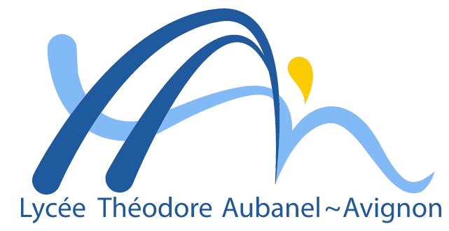
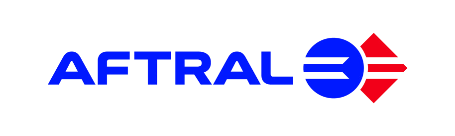
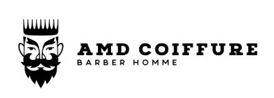
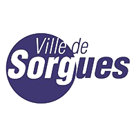
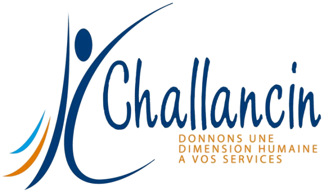

Lycée Théodore Aubanel — Avignon
Option SISR — Administration systèmes & réseaux

AFTRAL ISTELI — Avignon
Domaine : Logistique & transport
Lycée Théodore Aubanel — Avignon
Option Marketing - Obtenu

AMD Coiffure - Sorgues

Mairie de Sorgues

Guy Challancin - Sorgues
Intermarché - Sorgues
3 Brasseurs - Pontet